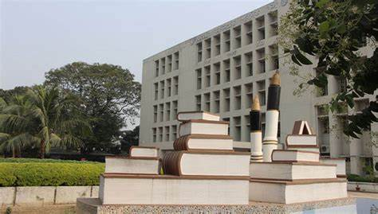
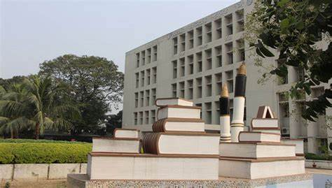
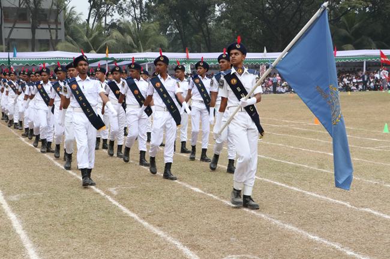
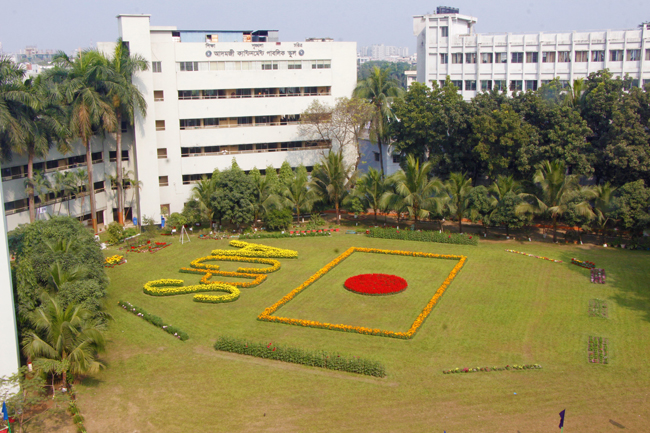
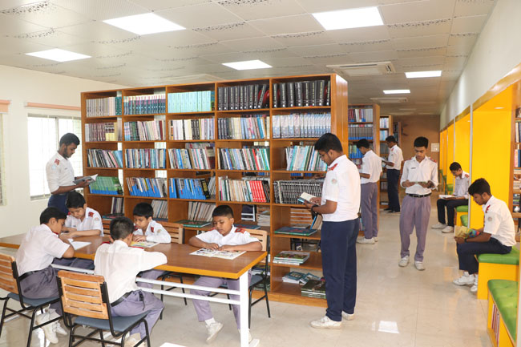

.png) 

Adamjee Cantonment Public School is one of the most prestigious and important educational institutions in Dhaka. It is located in the heart of the Dhaka Cantonment, comprising of an area of 5.00 acres of land. Adamjee Cantonment Public School was established in 1960 following the curriculum of British Public School. A British educationist Mr. Dolman was the first principal of the School. The classes started functioning with only six classes, from class Four to Nine. The first batch of students appeared in the Matriculation Examination in 1962. Subsequently, with further expansion of the institution, it was converted into a college and was renamed as Adamjee Cantonment College. In 1995, for some administrative reasons and effective teaching, the school section was totally bifurcated and shifted to its present location and its original name ''Adamjee Cantonment Public School'' was reinstated. The school is housed in two buildings: six storied and five storied. At present this is a two-shift school with the strength of about 7,500 students. The Day Shift which was discontinued, has been reintroduced on 1st January 2013. This school consists of Bangla version and English version and it's flag is yellow colour and monogram is pasted on the flag with four stars, which indicate the motto of the school- discipline, education and character.
  